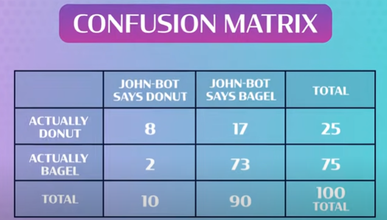

Supervised Learning

This is just what it sounds like: learning that is supervised.
This widely used form of AI was inspired by the human brain
(I mean, it makes sense right? Intelligence --> Brain?)
This functions in a similar way to how neurons and synapses of the brain function.
An important aspect of supervised learning is the confusion matrix:
It shows the results of various test on how the AI classifies
certain objects. (in this case, donuts vs bagels)

From this, you may be able to deduce that more input are better for accuracy.